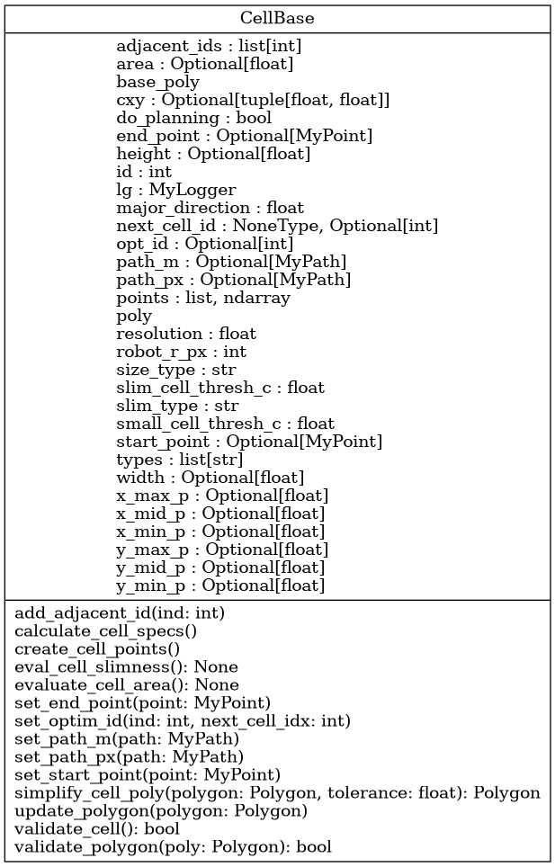
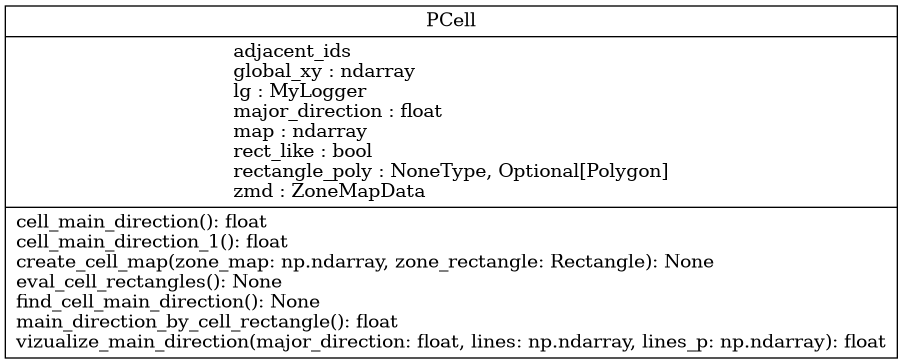
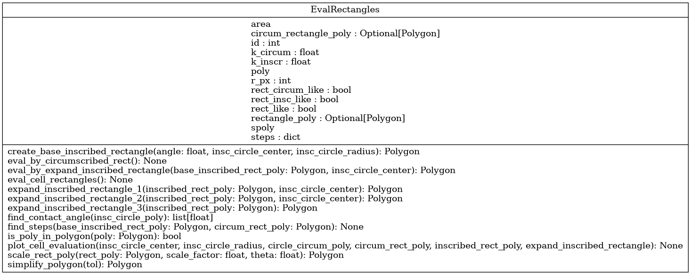
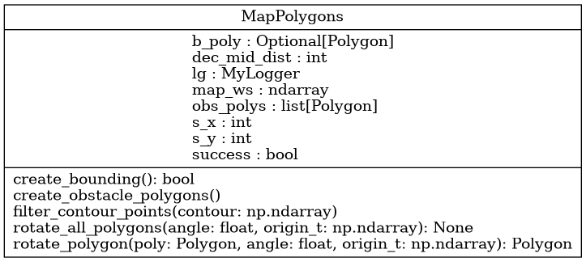
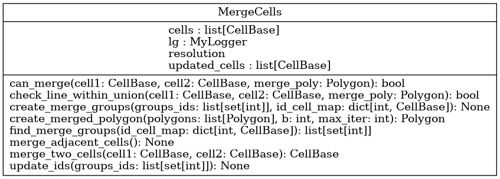
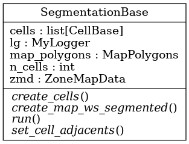
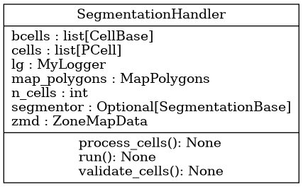
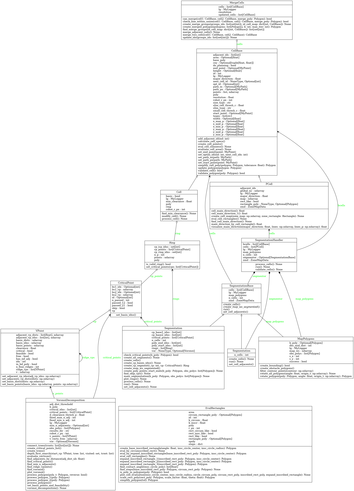

covpp.segmentation
Subpackages
Submodules
covpp.segmentation.cell_base


covpp.segmentation.cell_planning


covpp.segmentation.eval_rectangles


Module for evaluating rectangle-like properties of polygons for planning optimization.
- class EvalRectangles(cell_id: int, poly: shapely.Polygon, r_px: int)
Bases:
objectEvaluate cell for rectangle-like properties to optimize planning.
- Pipeline Steps:
Evaluate based on circumscribed rectangle (minimum_rotated_rectangle)
Create base inscribed rectangle from maximum inscribed circle
Expand inscribed rectangle in multiple directions
Set rectangle-like property based on evaluation results
- find_contact_angle(insc_circle_poly) list[float]
Find the angle of contact point between cell polygon and inscribed circle polygon.
Used to create the base inscribed rectangle aligned with the cell shape.
- eval_cell_rectangles() None
Evaluate the cell for rectangle-like properties.
- simplify_polygon(tol) shapely.Polygon
Simplify the cell polygon to reduce number of vertices.
- find_steps(base_inscribed_rect_poly: shapely.Polygon, circum_rect_poly: shapely.Polygon) None
Find expansion steps based on cell properties.
- eval_by_circumscribed_rect() None
Evaluate if the cell is rectangle-like based on the area ratio of the cell and the circumscribed rectangle.
- create_base_inscribed_rectangle(angle: float, insc_circle_center, insc_circle_radius) shapely.Polygon
Create an inscribed rectangle inside the circumscribed rectangle of the cell based on the inscribed circle.
- eval_by_expand_inscribed_rectangle(base_inscribed_rect_poly: shapely.Polygon, insc_circle_center) shapely.Polygon
Evaluate the inscribed rectangle by comparing it three expanded inscribed rectangles.
- expand_inscribed_rectangle_1(inscribed_rect_poly: shapely.Polygon, insc_circle_center) shapely.Polygon
Expand by iteratively scaling along each edge direction using containment checks. Uses scale_rect_poly for directional scaling and is_poly_in_polygon to stop at collision.
- expand_inscribed_rectangle_2(inscribed_rect_poly: shapely.Polygon, insc_circle_center) shapely.Polygon
Expand by selecting the most permissive direction first, then others. Uses scale_rect_poly for directional scaling and is_poly_in_polygon to bound growth.
- expand_inscribed_rectangle_3(inscribed_rect_poly: shapely.Polygon) shapely.Polygon
Expand primarily along the longest edge direction of the cell polygon. Uses scale_rect_poly with the edge's angle and its perpendicular.
- is_poly_in_polygon(poly: shapely.Polygon) bool
Check if the polygon poly is inside the cell polygon.
- scale_rect_poly(rect_poly: shapely.Polygon, scale_factor: float, theta: float) shapely.Polygon
Scale the rectangle polygon in the direction of theta by scale_factor.
- plot_cell_evaluation(insc_circle_center=None, insc_circle_radius=None, circle_circum_poly=None, circum_rect_poly=None, inscribed_rect_poly=None, expand_inscribed_rectangle=None) None
Plot the rectangle evaluation results.
covpp.segmentation.map_polygons


covpp.segmentation.merge_cells


covpp.segmentation.segmentation_base


covpp.segmentation.segmentation_handler


Module contents

